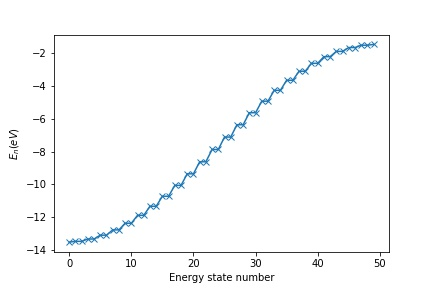
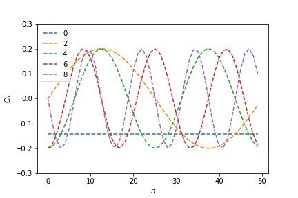
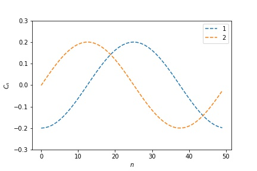
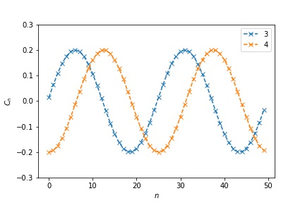

03 - Electronic Band Structure of a 1D Periodic Chain¶
Consider a 1D chain of $N$ identical atoms , each with a single atomic orbital $\phi_i$, which is the solution of the atomic Schrodinger equation for the $i$th atom.
The atoms are $a$ apart - also known as the lattice constant.
We assume that the orbitals are orthonormal again:
\begin{align*} \int_0^{Na} \textrm{d}x \phi_i^* \phi_j = \delta_{ij} \end{align*}Now we join the two ends of the chain together. This is called periodic boundary conditions, and means that atom $0$ is a neighbour of atom $(N-1)$.
Our Hamiltonian is very similar to previous molecular work
\begin{align*} \hat{H} = \hat{T} + \sum_{j=0}^{N-1} \hat{V_j} \end{align*}where $\hat{T} = -(\hbar^2/2m) \frac{\textrm{d}^2}{\textrm{d} x^2} $ is the kinetic energy operator and the $\bar{V}_j$ are the coulomb potential energy operators of an electron with the $j$th nuclei, which on our chain will be at position $ja$, i.e. atom number times the distance between atoms.
\begin{align*} V_j(x) = \frac{-e^2}{4 \pi \epsilon_0 |x - ja|} \end{align*}Now we need to figure out our Hamiltonian matrix. The Hamiltonian matrix elements are given by
\begin{align*} H_{ij} = \int_0^{Na} \textrm{d}x \phi_i^* \hat{H}\phi_j \end{align*}and we should remember that
\begin{align*} H_{\rm{atomic}} \phi_j = (\hat{T} + \hat{V_j}) \phi_j = \epsilon_j \phi_j \end{align*}and, as all the atoms are the same $\epsilon_j = \epsilon$ is a single parameter, and atomic orbital $\phi$.
Hamiltonian¶
Our matrix form of the Schroedinger equation is
\begin{align*} \sum_j H_{ij} C_j = E C_i \end{align*}If we write out our general matrix element we have
\begin{align*} H_{ij} & = \int_0^{Na} \textrm{d}x \phi_i^* \hat{H}\phi_j \\ & = \int_0^{Na} \textrm{d}x \phi_i^* (\hat{T} + \hat{V_j}) \phi_j + \sum_{k \neq j} \int_0^{Na} \textrm{d}x \phi_i \hat{V}_k \phi_j \\ & = \delta_{i,j} \epsilon + \sum_{k \neq j} \int_0^{Na} \textrm{d}x\phi_i \hat{V}_k \phi_j \end{align*}The sum is a little bit fiddly, but once you figure out what the $V$ integrals are and look carefully at the indices we will end up with
\begin{align*} \sum_{k \neq j} \int_0^{Na} \textrm{d}x \phi_i V_k \phi_j = \begin{cases} \hfill V_0 \hfill & \text{ if $i = j$} \\ \hfill t \hfill & \text{ if $i = j \pm 1$} \\ \hfill 0 \hfill & \text{ otherwise} \\ \end{cases} \end{align*}$V_0$ is the total coulomb energy of the electron at an atomic site with all the other nuclei.
When the atoms are neighbours we have a hopping integral, $t$, exactly like the molecular case.
If the atoms are separated by more than one site, we have no interaction.
\begin{align*} H_{ij} & = \delta_{i,j} (\epsilon + V_0) - t(\delta_{i+1,j} + \delta_{i-1,j}) \end{align*}or written out in a matrix
\begin{align*} H = \left( \begin{array}{ccccccc} (\epsilon + V_0) & t & 0 & \ldots & 0 & 0 & t\\ t & (\epsilon + V_0) & t & 0 & \ldots & 0 & 0\\ 0 & t & (\epsilon + V_0) & t & 0 & \ldots & 0 \\ \vdots & \vdots & \vdots & \vdots& \vdots & \vdots & \vdots \\ 0 & \ldots & 0 & 0 & t &(\epsilon + V_0) & t \\ t & \ldots & 0 & 0 & 0 & t &(\epsilon + V_0) \end{array} \right) \end{align*}Periodic chain - 1D crystal, computational¶
We'll take a computational approach to solving this problem first.
We can build a big matrix in silico and diagonalize it to find the eigenvalues and eigenvectors.
n = 50 # how long the chain should be
epsilon = -7.0 # atomic energy (eV)
V_0 = -0.5 # coulomb interaction energy with other atoms (eV)
t = -3.0 # hopping integral (eV)
array([[-7.5, -3. , 0. , ..., 0. , 0. , -3. ], [-3. , -7.5, -3. , ..., 0. , 0. , 0. ], [ 0. , -3. , -7.5, ..., 0. , 0. , 0. ], ..., [ 0. , 0. , 0. , ..., -7.5, -3. , 0. ], [ 0. , 0. , 0. , ..., -3. , -7.5, -3. ], [-3. , 0. , 0. , ..., 0. , -3. , -7.5]])
Now we can look at our sorted eigenvalues, and note that there are exactly $N$ of them.

- apart from the first and last values, there are two states of the same energy (degenerate states)
- the density of states (number of states in an energy range) is larger for lower and higher values
- the distribution of values looks like it might be described by a simple rule
- the eigenvalues cover an energy range of $4t$.
Let us take a look at the first few eigenfunctions - I'll only print one of the pairs of degenerate orbitals.
What we show is the values of $c_i$ - the coefficients of the atomic orbitals in the states.

These look quite familiar(?)!
Lets look at not the lowest state, but the two just above it in energy:

These look like a pair of sine and cosine functions, with with a period of the whole chain.
Lets look at the next two states:

Now remember our actual wavefunction is
\begin{align*} \psi(x) = \sum_i C_i \phi_i(x) \end{align*}so we have atomic orbitals, whose contribution to the wavefunction is modulated by waves that fit the periodicity of the system.
Analytical solution¶
Another way of writing pairs of sin and cosine functions is as pairs of complex exponentials.
We could try a solution to our set of equations of the form
the $\sqrt{N}$ is to ensure the probability of an electron that occupies an orbital being 1 over all space (normalisation).
We plug our guess solution and matrix form of the Hamiltonian into the LHS of the Schroedinger equation, and using the properties of the Kronecker delta we get: \begin{align*} \sum_j H_{mj} C_j & = \sum_j \delta_{m,j} (\epsilon + V_0) C_j - \sum_j t(\delta_{m+1,j} + \delta_{m-1,j}) C_j \\ & = (\epsilon + V_0) \frac{e^{-ikma}}{\sqrt{N}} - t \Bigg(\frac{e^{-ik(m+1)a}}{\sqrt{N}} + \frac{e^{-ik(m-1)a}}{\sqrt{N}} \Bigg) \end{align*}and the right hand side is
\begin{align*} E \frac{e^{-ikma}}{\sqrt{N}} \end{align*}.
then dividing both sides by $\frac{e^{-ikma}}{\sqrt{N}}$ we get
\begin{align*} (\epsilon + V_0) - t \Bigg(\frac{e^{-ika}}{\sqrt{N}} + \frac{e^{+ika}}{\sqrt{N}} \Bigg) & = E \\ (\epsilon + V_0) - 2t \cos(ka) = E \end{align*}This gives us
Electronic 'dispersion' relation (for a 1D chain of s type orbitals)
$$ E = (\epsilon + V_0) - 2t \cos(ka) $$We have effectively fourier transformed our equations, and this has led to a set of algebraic equations that can be solved.
Quantisation of $k$¶
Now, because of the periodic symmetry of our system (all the atoms are the same), we can argue that \begin{align*} k \to k + 2 \pi / a \end{align*}
should give a physically identical system.

To see this we substitute this into our wavefunctions
$$ C_{n} = \frac{e^{-i(k+2\pi / a) na}}{\sqrt{N}} = \frac{e^{-ik na}e^{-i2\pi n}}{\sqrt{N}} = \frac{e^{-ik na}}{\sqrt{N}} $$And further, as we have $N$ sites to get physically identical solutions we require that $k = \frac{2 \pi m} { N a }, m = 0, \pm 1, \pm 2 \ldots, \frac{N}{2}$, similarly to the free electron case in the Sommerfeld model.
This corresponds to choosing a range $-\pi/a \lt k \leq \pi/a$ with $k$ values separated by $\frac{2 \pi} { N a }$.
With this restriction (quantization) we have $N$ energy levels from our $N$ initial atomic orbitals, and they are indeed the atomic orbitals modulated by the running waves we guessed at from the computational section.
If we look back at the energy levels we got by computational diagonalisation
We can see that our calculated values do describe a cosine function, the bandwidth is $4t$ and the pairs of degenerate values are (combinations) of those for which $k = \pm m$.
On the other hand, the spacing of levels is of the order $\Delta E = 2t 2 \pi a / Na$ (using a small angle approx for cos($ka$)) as $N$ tends to a macroscopic size, say Avagadro's Number, this means the level spacing is of the order $\Delta E \approx 2t 2 \pi a/ Na \approx 12 t / N \sim 10^{-22} \textrm{ eV}$.
So even though $k$ is discrete, in practice it behaves as a continous variable, which is why we often (must) replace a sum over $k$ with an integral.
Electron filling¶
Now that we have the energy levels, we need to feed electrons into them, until we have the correct number.
If we remember our rules that at very low temperature, the occupations the $i^{th}$ orbital with energy $\epsilon_i$ is given by
\begin{align*} N_i = \begin{cases} \hfill 2 \hfill & \text{ if $\epsilon_i < E_f$} \\ \hfill 1 \hfill & \text{ if $\epsilon_i = E_f$} \\ \hfill 0 \hfill & \text{ if $\epsilon_i > E_f$} \\ \end{cases} \end{align*}this mean that if we have $N$ states and $N$ electrons to feed into them we will half fill the band.
The situation will be (rather) similar to the free electron case.
At higher $T$s the occupations will be smeared out over a width of $\approx k_B T$ and only electrons within $\approx k_B T$ of $E_F$ will be 'active', i.e. will contribute to transport etc.
If we had two electrons per atom, all $N$ states would be fully filled. There would be no available states for electrons to thermally excite into, and no transport!
Full bands can effectively be ignored for many reasons.
Effective Mass¶
We now show that near the top and bottom of the band, electrons behave similarly to free-electrons.
Taking our dispersion relation
$$ E = (\epsilon + V_0) - 2t \cos(ka) $$and making a small angle expansion of the cosine, ($\cos x \approx 1 - x^2/2$) we get
$$ E = (\epsilon + V_0) - 2t + ta^2k^2 $$if you remember, the dispersion relation for free electrons was similar
$$ E_{\rm{free}} = \frac{\hbar^2 k^2}{2m_e} $$so our tight-binding dispersion relation near the bottom of the band would look similar to the free-electron model if we define an effective mass
$$ m^* = \frac{\hbar^2}{2ta^2} $$then our dispersion relation near the bottom of the band looks like
$$ E_{\rm{tight}} = \frac{\hbar^2 k^2}{2m^*} $$We can take the top of the band, and expand around $k = \pi/a$ instead of 0 to get a similar relation at the top of the band.
This gives a hint why the free-electron model is still useful - near the top and bottom of bands, electrons behave rather similarly to free electrons in many ways, but with a modified effective mass.
Multiple orbitals - characterisation of materials¶
In reality atoms have multiple electrons and multiple atomic orbitals.
The orbitals will form their own bands, which could overlap (in the 2 or 3D case: technically this can't really happen in 1D) in energy. The pattern of bands will depend on the hopping integrals, and the atomic energies, which will in principle be different for different atoms and different orbitals and orbital pairs in the crystal.
This gives us an approximate characterisation scheme for materials.
Links¶
Steven Simon's lecture
https://podcasts.ox.ac.uk/08-microscopic-view-electrons-solids-one-dimension-tight-binding-chain
Summary¶
- we've used a tight binding approach to calculate and examine the wavefunctions and energies of a 1D chain of atoms.
- the 'dispersion' of the band is $E = \epsilon + V_0 + 2t\cos(ka)$
- the bandwidth is $4t$.
- there are $N$, where $N$ is the number of atoms (assuming each contributes 1 orbital function).
- the states are a product of something that repeats with the period of the atomic constituents ($\phi_i$) and running waves that extend over the chain which modulate over its entire length.
03 - Atomic Vibrations of a 1D Periodic Chain¶
Consider a 1D chain of $N$ identical 'atoms'.
Each atom has mass $m$ and is separated from the next by an equilibrium spacing $a$ (lattice constant).
The total length of the chain is $Na$. We define the equilibrium position of atom $n$ to be $x_n^{eq} = na$.
Atoms can move only in the $x$ direction, and we can describe the instantaneous movement of an atom by the variable $\delta x_n = x_n - x_n^{eq}$.

We'll approximate our interatomic potential, using a Taylor expansion around the equilibrium postition of the atoms.
At low enough temperature, we can just keep the first term in the expansion, to give us
Harmonic approximation
We expand the potential energy due to an atomic displacement in powers of $x - x^{eq}$ \begin{align*} V(x) &= V(x^{eq}) + \frac{\kappa}{2!}(x - x^{eq})^2 - \frac{\kappa_3}{3!}(x-x^{eq})^3 + \ldots \\ &\approx V(x^{eq}) + \frac{\kappa}{2!}(x - x^{eq})^2 \end{align*}We'll use classical mechanics for now.
We have springs, with spring constant $\kappa$ between our atoms.
The extension of the bond will be related to the difference in the instantaneous movements of two neighbouring atoms.
$$ V_{tot} = \sum_i V(x_{i+1}-x_i) = \sum_i \frac{\kappa}{2}(x_{i+1} - x_i - a)^2 = \sum_i \frac{\kappa}{2}(\delta x_{i+1} - \delta x_i)^2 $$The force on the $n^{th}$ atom is then given by
$$ F_n = - \frac{\partial V_{tot}}{\partial x_n} = \kappa(\delta x_{n+1} - \delta x_n) + \kappa(\delta x_{n-1} - \delta x_n) $$Which gives us Newton's equations of motion for this system
$$ m\frac{\partial ^2 (\delta x_n)}{\partial t^2} = \kappa(\delta x_{n+1} + \delta x_{n-1} - 2 \delta x_n) $$We look for normal modes, and attempt a wavelike solution
$$ \delta x_n = Ae^{i \omega t - ikx_n^{eq}} = Ae^{i \omega t - ikna} $$where $A$, $\omega$ and $k$ are the amplitude, frequency and wavevector of the proposed wave.
(Note, this is very similar to the solution of the tightbinding electronic model, and of the Drude AC conductivity.)
If we plug this guess into our equations of motion we get
$$ -m \omega^2 Ae^{i \omega t - ikna} = \kappa Ae^{i \omega t } \left[ e^{- ik(n+1)a} + e^{- ik(n-1)a} - 2 e^{- ikna} \right] $$which simplifies to
$$ m \omega^2 = 2 \kappa \left[1 - \text{cos}(ka) \right] = 4 \kappa \text{sin}^2(ka/2) $$from which it follows
Dispersion relation for 1D system of identical masses
$$ \omega = 2 \sqrt {\frac{\kappa}{m}} \mid \text{sin}(ka/2) \mid $$which gives us a dispersion relation - a connection between frequency and wavevector.
Sound waves¶
Sound waves correspond to very long wavelength oscillations - which means very small wave vector.
Again we make a small angle expansion to get
$$ \omega = 2 \sqrt {\frac{\kappa}{m}} | \sin(ka/2) | \approx 2 \sqrt {\frac{\kappa}{m}}|ka/2| = \sqrt {\frac{\kappa}{m}} a |k| $$(and phase velocity, which equals group velocity in this case when the dispersion is linear),
$$ \nu = \omega / |k| = \sqrt{\frac{\kappa}{m}}a $$.
This give the speed of sound waves in our 1D crystal.
Thermal Expansion¶
We took a harmonic model for interaction between our atoms.
To understand thermal expansion this is not adequate, to appreciate this we need to look at out potential energy curve, and how it compares to a harmonic one.
The curve is assymmetric. As temperature increases, the atoms will wander further to the right (long distance between atoms) than to the left (where repulsive interaction become very strong, very quickly).
This means that the average position of an atom $\left< x_n \right>$ will get larger, as temperature increases.
Reciprocal Lattice¶
Now, because of the periodic symmetry of our system (all the atoms are the same), we can argue that
\begin{align*} k \to k + 2 \pi / a \end{align*}should give a physically identical system.
Further, as we have $N$ sites to get physically identical solutions we require that $k = \frac{2 \pi m} { N a }, m = 0, \pm 1, \pm 2 \ldots, \frac{N}{2}$, as for the tight binding model.
This corresponds to choosing a range $-\pi/a \lt k \leq \pi/a$
With this restriction we have $N$ normal modes from our $N$ atoms that each have 1 degree of freedom.
Quantum Correspondence Principle¶
Classical normal mode $\to$ quantum harmonic oscillator.
1 quantum of vibrational (of a quantum oscillator) in a crystal is called a 'phonon'.
Phonons are bosons, so they behave differently to the electrons we've been discussing. - they tend to accumulate in the ground state.
If we have time we can look at this in more detaiil later.
Alternating chain¶
What would happen if we had two types of atoms that alternated along the chain?
For simplicity lets keep the mass the same, but the spring that connects them alternates, with spring constants $\kappa_1$ and $\kappa_2$.
Now we have a 'unit cell' with two atoms in it.
This unit cell is the unit that replicates itself to form the crystal. We'll discuss this much more next week.
Let us define a reference point in the same location within each unit cell. If we have a 'lattice constant' $a$, which is the length of the unit cell then
$$ r_n = an $$lets say that the reference point is in the center of the cell, and the two types of atom are dispaced from it by $\pm 1/4 a$. We then have the equilibrium positions of our atoms as
$$ x_n^{eq} = an - 1/4 a $$$$ y_n^{eq} = an + 1/4 a $$where we call the positions of atom type one $x_n$ and type two $y_n$.
Now we can set up our equations of motion pretty much like we did for the monoatomic chain.
\begin{align*} m\frac{\partial ^2 (\delta x_n)}{\partial t^2} = \kappa_2(\delta y_n - \delta x_n) + \kappa_1(\delta y_{n-1} - \delta x_n)) \\ m\frac{\partial ^2 (\delta y_n)}{\partial t^2} = \kappa_1(\delta x_{n+1} - \delta y_n) + \kappa_2(\delta x_n - \delta y_n)) \end{align*}and we again guess that there will be an envelope of atomic displacements of a running wave form
\begin{align*} \delta x_n = A_x e^{i \omega t - ikx_n^{eq}} = A_x e^{i \omega t - ikna} \\ \delta y_n = A_y e^{i \omega t - iky_n^{eq}} = A_y e^{i \omega t - ikna} \end{align*}proceding as before we get
\begin{align*} -m \omega^2 A_x = \kappa_2 A_y + \kappa_1 A_y e^{ ika} - (\kappa_1 + \kappa_2) A_x\\ -m \omega^2 A_y = \kappa_1 A_x e^{ ika} + \kappa_2 A_x + - (\kappa_1 + \kappa_2) A_y \end{align*}collecting this together in matrix form we get
\begin{align*} m \omega^2 \left( \begin{array}{c} A_x \\ A_y \end{array}\right) = \left( \begin{array}{c} (\kappa_1 + \kappa_2) & - \kappa_2 - \kappa_1 e^{ ika} \\ - \kappa_1 - \kappa_2 e^{ ika} & (\kappa_1 + \kappa_2) \end{array}\right) \left( \begin{array}{c} A_x \\ A_y \end{array}\right) \end{align*}which means that will get 2 solutions for each value of $\omega$.
$$ \omega_{\pm} = \sqrt{\frac{\kappa_1 + \kappa_2}{m} \pm \frac{1}{m}\sqrt{(\kappa_1 + \kappa_2)^2 - 4 \kappa_1 \kappa_2 \text{sin}^2 (ka/2)}} $$we have $N$ values of $k$ as before, and 2 solutions for each $k$, so $2N$ modes, which all adds up.
We'll discuss the implications next week and in the problem class.
Links¶
Steven Simon's lecture
visualisation of vibrations - you can download a program called CHAINPLOT from Mike Glazer's website. You need to go to the downloads and fill in a request.
Summary¶
- binding curves lead to effective springs between atoms
- our simple model allows us to get a flavour of a wide variety of phenomena (this is the purpose of a model!)
- sound waves
- optical branch in systems with more than one atom in the unit cell
- thermal expansion
- phonons - collective excitations, analogous to classical normal modes
- unit cell, range of k-points, hints at reciprocal lattice